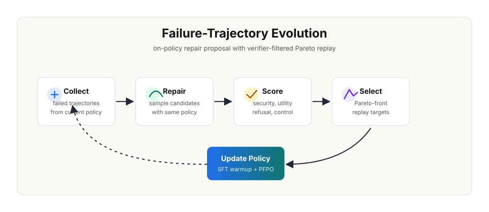

Failure Collection
Roll out the current agent, preserve failed trajectories, and attach verifier feedback.
Tool-using language agents can fail through complete trajectories rather than only final responses. FATE converts verifier-scored failures into repair supervision by having the current policy propose repairs, re-scoring those repairs across multiple objectives, and selecting Pareto-balanced targets for policy refinement.

Roll out the current agent, preserve failed trajectories, and attach verifier feedback.
Generate same-policy repairs, re-score them, and keep balanced Pareto-front targets.
Use replay targets for supervised warmup and grouped Pareto rewards for refinement.
@misc{yin2026fate,
title = {On-Policy Self-Evolution via Failure Trajectories for Agentic Safety Alignment},
author = {Bo Yin and Qi Li and Xinchao Wang},
year = {2026}
}